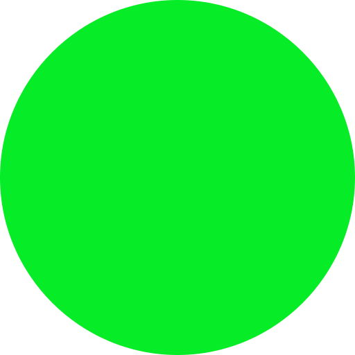

OLT Filters
District
Mandal
OLT Type
OLT Group
OLT Category
| SNO | OLT |
|---|---|
| {{i+1}} | {{v.asrt_nm}} |
NO DATA
| SNO | OLT |
|---|---|
| {{i+1}} | {{v.asrt_nm}} |
NO DATA
| SNO | OLT |
|---|---|
| {{i+1}} | {{v.asrt_nm}} |
NO DATA
| SNO | OLT |
|---|---|
| {{i+1}} | {{v.asrt_nm}} |
NO DATA
Substation Node
Mandal Nodes
Zonal Nodes
District Nodes
NOC
Man Nds Downgraded
Other
In Service
Block/Planned
Maintenance